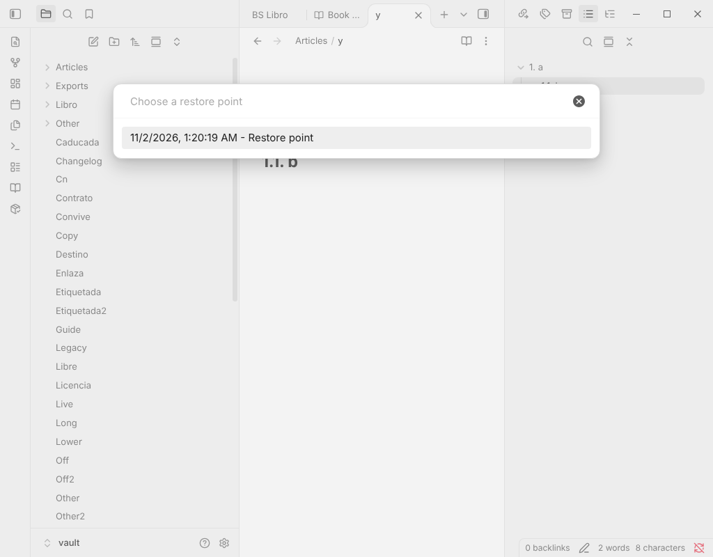

Obsidian plugin
Update Radar Pro
Make plugin updates safe: a copy before every update, a way back to how everything was, and a guided search for the plugin that breaks something.
You can try every Pro feature free for 14 days, without a key.

What it does and who it is for
Update Radar tells you which community plugins have an update. Pro is for people who keep many plugins and cannot afford a broken vault after an update: it copies each plugin first, lets you go back, and helps you find the culprit when something stops working.
It requires the free Update Radar plugin (0.5.0 or later).
What Pro adds
- Copies before every updateBefore Update Radar installs an update, Pro copies the plugin's files into your configuration folder. Restore any copy later; the plugin reloads and Update Radar stops offering the newer version.
- Restore pointsThe version of every plugin and which are on. Pro makes one before Update all, and Go back to a restore point shows what would change and asks first.
- Find the plugin causing a problemA guided search that turns plugins off and on in halves and asks whether the problem is still there, until one plugin is left. At the end your plugins are back as they were.
- Inspect an updateCompares the new release with the installed one: size, new or gone web hosts, patterns worth a look and changes to the manifest. Hints, not verdicts; nothing is run.
- Summary of release notesWrites one note with the release notes of up to 20 waiting updates, with links and code escaped for safety.
- Update rulesPer plugin: all updates, minor and major only, major only or pinned, plus a wait of 1 to 30 days.
What stays free, for good
- Updates in the status bar and a list of what changed, with release notes.
- Update one plugin or all, ignore a version, snooze a plugin, wait before an update is offered.
- Go back to an earlier version of a plugin.
- Compatibility checks and plugin health flags (removed, abandoned, not from the directory).
Nothing in the free plugin moves into Pro. After the trial ends, restoring copies and restore points, the search, and deleting copies keep working for good; making new copies, inspecting, summaries and rules need a key.
Price and free trial
9 USD, one-time payment. You can try every Pro feature free for 14 days, without a key.
One-time payment. No subscription. The code is open source (MIT); buying a key is a purchase receipt that keeps it maintained, not copy protection.
How to activate
- Buy with the button on this page. The payment service sends your licence key in the receipt email.
- Open the plugin's settings in Obsidian and paste the key.
- Press Activate.
Network and privacy
- Copies and restore points are plain files in your vault. Nothing is sent anywhere.
- Apart from the licence check, the only download is when you ask to inspect an update: it fetches main.js and manifest.json of that release from github.com.
- The licence check: when you press Activate, the plugin sends the key, once, to the licence endpoint of the payment service. After that it is saved on your device and nothing is checked again.
- No telemetry, no analytics, no accounts, no self-update. This page has no cookies and loads nothing from other sites.
Refunds
Payments and refunds are handled by the payment service. Its terms, shown at checkout, apply.
Questions
Do I need the free plugin?
Yes. Update Radar Pro requires the free Update Radar plugin (0.5.0 or later) and must be running for copies before updates, rules and the summary.
Can copies contain secrets?
A plugin's data.json may hold tokens or passwords, and a copy is a plain file. Turn Include data.json off if you do not want that. Delete all snapshots removes everything.
What happens when the trial ends?
Restoring, going back to a restore point, the search and deleting copies keep working. New copies, inspecting, summaries and rules need a key.
Does it update plugins by itself?
No. It never installs or updates a plugin without your click.